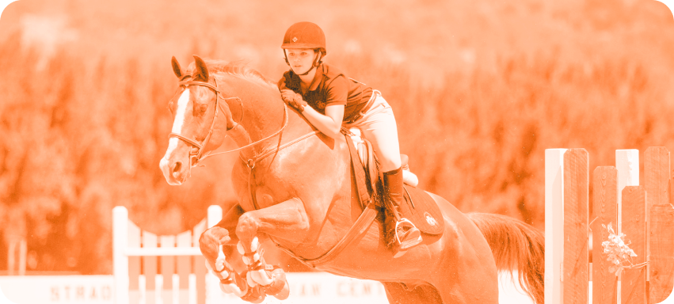

ДРИФТ
Это экстремальный и опасный вид автоспорта, где необходим контроль в управлении автомобилем на высокой скорости с использованием техники скольжения

КОНКУР
Конкур – конный спорт, который включает
в себя преодоление
препятствий на лошади. Это один из самых зрелищных и популярных
видов конного спорта. В конкуре лошадь и всадник должны